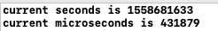
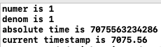

由于底层逻辑实现不同操作系统区别很大，所以干脆分篇来说。
主要讲一下Time、TimeTicks两个类里面对于时间戳的实现，其余的运算符重载、边缘工具方法就不看了，先是Time。
Time
类本身的说明在上一篇有，这里就去掉了。
class V8_BASE_EXPORT Time final : public time_internal::TimeBase<Time> {
public:
// Contains the nullptr time. Use Time::Now() to get the current time.
constexpr Time() : TimeBase(0) {}
// Returns the current time. Watch out, the system might adjust its clock
// in which case time will actually go backwards. We don't guarantee that
// times are increasing, or that two calls to Now() won't be the same.
static Time Now();
// Returns the current time. Same as Now() except that this function always
// uses system time so that there are no discrepancies between the returned
// time and system time even on virtual environments including our test bot.
// For timing sensitive unittests, this function should be used.
static Time NowFromSystemTime();
// ...
};从注释可知，这里的Now是返回国际时间戳的通用方法，但是操作系统可能会对返回值做修正，所以是有一定风险的。第二个NowFromSystemTime使用的系统时间比较准确，求精确的情况下考虑使用这一个。
但是在mac上，这两个方法是一样的。
#elif V8_OS_POSIX
Time Time::Now() {
// ...
}
Time Time::NowFromSystemTime() {
return Now();
}这就很蠢了，可能是该操作系统不存在修正时间戳的情况，所以没必要分辨这两个方法了。
所以对于两种方式的解析就变成了一个，集中来看Now的实现。
// #ifndef _STRUCT_TIMEVAL
// #define _STRUCT_TIMEVAL struct timeval
// _STRUCT_TIMEVAL
// {
// __darwin_time_t tv_sec; /* seconds */
// __darwin_suseconds_t tv_usec; /* and microseconds */
// };
Time Time::Now() {
// 内置结构体 见上面
struct timeval tv;
// Linux内置时间函数
int result = gettimeofday(&tv, nullptr);
// 返回值检测
DCHECK_EQ(0, result);
USE(result);
return FromTimeval(tv);
}这里的用的都是Linux内置的方法，timeval结构体专门用来获取返回的时间，可以精确到微秒，也就是秒/毫秒/微秒的精度。
结构体两部分分别保存当前时间戳的秒部分、微秒部分，类型均为long，下面用一个简单例子来展示。
int main() {
struct timeval tv;
gettimeofday(&tv, nullptr);
cout << "current seconds is " << tv.tv_sec << endl;
cout << "current microseconds is " <<tv.tv_usec << endl;
}在浏览器下面同时用Date.now()做一个对比，由于还是有一定的时间差，所以微秒部分肯定对不上的。
两者输出对比如下。

在秒的部分完全对上了，微秒那块就别在意了，我可没有神手速。
这样，就通过系统API得到了当前时间戳，下面就是对两个部分做一个处理。
Time Time::FromTimeval(struct timeval tv) {
// 1秒 = 1000 * 1000微秒 这里做的合法性检测
DCHECK_GE(tv.tv_usec, 0);
DCHECK(tv.tv_usec < static_cast<suseconds_t>(kMicrosecondsPerSecond));
// 当秒、微秒都返回0 返回默认构造类 如下
// constexpr Time() : TimeBase(0) {}
if (tv.tv_usec == 0 && tv.tv_sec == 0) {
return Time();
}
// 如果返回值达到了最大值 则返回最大值 max也是内置方法
if (tv.tv_usec == static_cast<suseconds_t>(kMicrosecondsPerSecond - 1) &&
tv.tv_sec == std::numeric_limits<time_t>::max()) {
return Max();
}
// 这里返回微秒单位的数值
return Time(tv.tv_sec * kMicrosecondsPerSecond + tv.tv_usec);
}比较简单，看一下注释就懂了，最后返回的是以微秒为单位的一个长整数，而JS中的Date.now()返回的则是毫秒单位，略有不同。
TimeTicks
class V8_BASE_EXPORT TimeTicks final : public time_internal::TimeBase<TimeTicks> {
public:
constexpr TimeTicks() : TimeBase(0) {}
static TimeTicks Now();
static TimeTicks HighResolutionNow();
static bool IsHighResolution();
private:
friend class time_internal::TimeBase<TimeTicks>;
explicit constexpr TimeTicks(int64_t ticks) : TimeBase(ticks) {}
};这个类看看就好了，跟上面那个类似，也有两个方法，一个是更精确的。
然而，两个方法也是一个，在mac上不存在精细度(windows上都有区别，下篇搞)，V8在内部直接写了如下注释。
#error platform does not implement TimeTicks::HighResolutionNow.
所以，只看Now的实现。
struct mach_timebase_info {
uint32_t numer; // 分子
uint32_t denom; // 分母
};
TimeTicks TimeTicks::Now() {
int64_t ticks;
static struct mach_timebase_info info;
if (info.denom == 0) {
kern_return_t result = mach_timebase_info(&info);
}
ticks = (mach_absolute_time() / Time::kNanosecondsPerMicrosecond * info.numer / info.denom);
// Make sure we never return 0 here.
return TimeTicks(ticks + 1);
}这里涉及2个内置方法和1个内置结构体，挨个介绍一下。
唯一有价值的就是那个单位，由于返回的绝对时间单位是纳秒，所以需要除以TimeConstants里面的常数，最后与基准参数相乘，最终得到一个硬件时间戳。
本地做一个实验。
int main() {
static struct mach_timebase_info info;
mach_timebase_info(&info);
cout << "numer is " << info.numer << endl;
cout << "denom is " << info.denom << endl;
cout << "absolute time is " << mach_absolute_time() << endl;
cout << "current timestamp is " << (info.numer / info.denom) * (mach_absolute_time() * 1e-9) << endl;
}这样得到最终的结果理论上就是我mac电脑的活跃秒数。

7000秒，也就是大约2个小时吧，看来还是很准确的，有兴趣的可以自行实验。
下一篇换windows，apple的apidoc真是一坨屎，根本跟微软没法比。